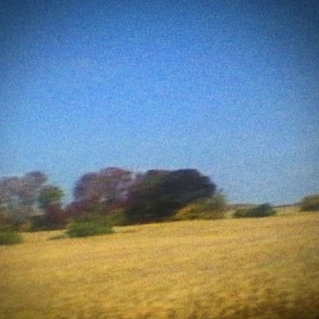

Written by:
Keenen Cates ~10 listens
Listen while you read!
Benji

Sun Kil Moon - (2014)
Benji. This album isn't the lovable mixed breed dog from the 1974 film "Benji." No, this album is something devastating. Mark Kozelek gives the listeners a catalog of intimate, tragic experiences. For example, the track “Jim Wise” is about a man who mercy killed his wife in a hospital, and failed to commit suicide after doing so. Not only is this track cathartic, it offers no answers. Kozelek transfers a deep sense of melancholy onto the listener, without trying to force his opinion or meanings to these tragic events. That’s what makes this album so effective -- Kozelek is able to tell devastating stories to the listener in a gripping way. Which is multiplied the simplicity and humanity of it. There’s no answer to the infinite tragedies, and what’s left is that heaviness. Not crying, not sadness -- a deep sense of misfortune in the bones of humanity.
What’s truly remarkable about Kozelek is his ability to make all of these stories feel intimate. All of the tracks on Benji feel real. Much of the album is interlaced with historical facts that can be found on a variety of places on the internet. For example, the song about Jim Wise is a true story about a man who killed his wife in a hospital after she had an aneurysm, and he couldn’t bare seeing her in pain. Even if parts of the songs are fictional, Kozelek has weaved his research into intricate, realistic plotlines. In the opening track Carissa, Kozelek details the life of his cousin Carissa who died to an aerosol can that exploded while taking out the trash. One of the lines of the song says, “Carissa was 35 -- You don’t just raise two kids and take your trash and just die --.” Yet, it happened to Carissa and his Uncle(detailed in the latter track “Dogs”). This line epitomizes what’s effective about the album, people shouldn’t die like that, but it still happened twice. People simply can’t make that kinda thing up either -- out of the many absurdities of life, his close family died taking out trash. Even more impressive, the album doesn’t feel like a gimmick. Many albums try to deal with mortality in a reductive, overly esoteric fashion. Yet even on topical tracks such as, “Pray for Newtown” the lyrics are heartfelt.
Overall, the tracks on “Benji” are complex and merit multiple listens. Even after exhaustive listening, there are still layers of depth to unfold and one listen isn’t quite like another. Kozelek manages to grasp at true wisdom through earnesty and simplicity. Even in the tragic landscape of the album, it invokes the sublimity of life. No matter how depressing or absurd life can be, there is still a sense of beauty.
Where You Can Buy It
Track Listing